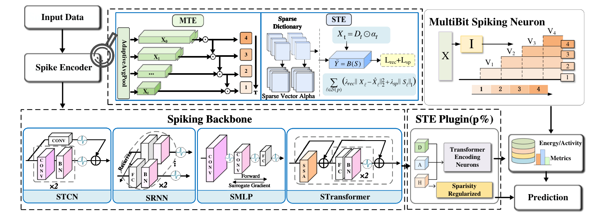
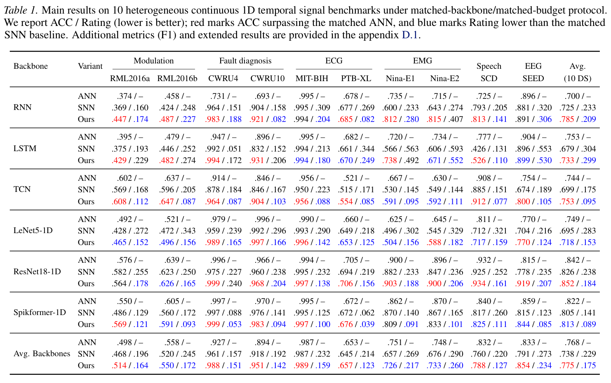

Paper Story · ICML 2026 · CCF-A
Multi-scale temporal & sparse transform encoding
Narrowing the ANN–SNN Gap for Continuous 1D Temporal Signal Classification with Multi-Scale Temporal Encoding and Sparsity-Regularized Transform Encoding
Proceedings of the 43rd International Conference on Machine Learning, 306, 116587-116606 (2026)
Research question
Short-horizon SNNs must retain temporal evidence within few inference steps while controlling redundant firing. Repeated inputs underuse the multi-scale structure of continuous signals.
Core method
MTE constructs multi-scale streams with scale-aligned integer spikes. STE learns spike codes through an analysis transform, training-only reconstruction, and sparsity regularization. Reconstruction branches are removed at inference.
Method steps
- Continuous 1D input
Receive segments of modulation, vibration, physiological, or speech signals.
- MTE
Build multi-scale streams with scale-aligned integer spikes.
- STE
Control internal representations and spike activity through sparse transform coding.
- Short-horizon readout
Aggregate outputs at default T=4; reconstruction is used only in training.
Main finding
Across ten continuous 1D signal benchmarks with matched backbones and training budgets, combining MTE with STE improves overall classification performance over standard SNNs. Table 1 reports the ANN, base SNN and combined method by backbone and dataset.
Why it matters
The framework connects input information density with internal firing redundancy and can be inserted into multiple backbone families for modulation, fault diagnosis, and physiological signal tasks.
Figures


MTE×STE Encoding Framework
Figure 2 · Original Figure 2: continuous signals, multi-scale streams, plug-in STE, and classification readout.
Enrich useful short-horizon evidence before compressing redundant internal firing.
Source: Proceedings of the 43rd International Conference on Machine Learning, 306, 116587-116606 (2026). © 2026 the authors.
Figure reuse rights pending


Matched Comparisons on Ten Datasets
Table 1 · Original Table 1 reports ACC / Rating for ANN, baseline SNN, and MTE×STE.
Mean accuracy improves and activity falls, with visible task and backbone variation.
Source: Proceedings of the 43rd International Conference on Machine Learning, 306, 116587-116606 (2026). © 2026 the authors.
Figure reuse rights pending
Scope and conditions
Table 4 uses synaptic operations, spike activity and converted energy to compare algorithmic cost. The paper does not measure chip power or wall-clock latency.